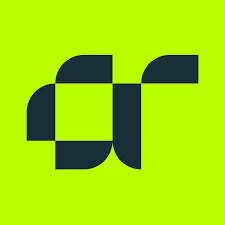
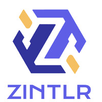
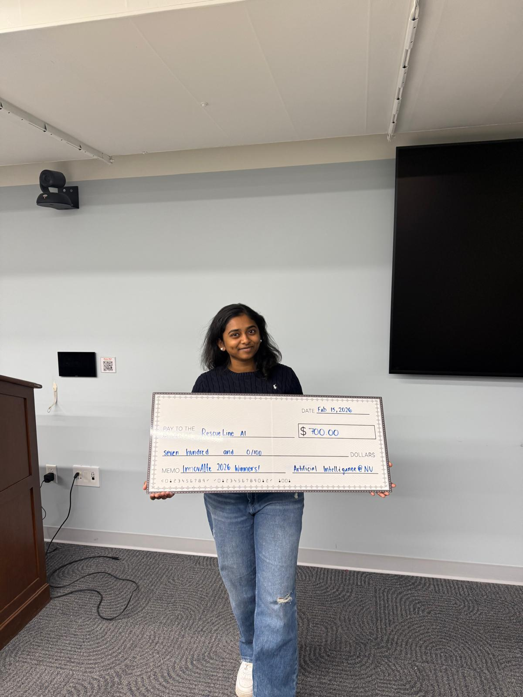
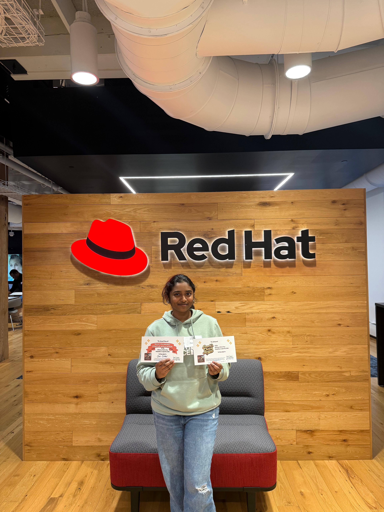

Data Scientist & Software Engineer
Naga Pavithra
Lagisetty
Building intelligent systems at the intersection of machine learning, computer vision, and full-stack development.
A bit about me
I'm a graduate student at Northeastern University pursuing my Master's in Data Science with a 4.0 GPA. I love tackling complex problems, whether that's building an ML pipeline for product recommendations, engineering real-time emergency triage systems, or training models to classify crop diseases from images.
When I'm not coding, you'll find me at hackathons. I've won prizes at the NEU AI Hackathon, Yconic AI Hackathon, and the Open Accelerator Hackathon at Red Hat.
Where I've worked
Pure Fishing
AI Developer Intern
Columbia, SC
- Building conversational AI solutions for customer service automation
Shezaar
Machine Learning Engineer
California, USA
- Designed and deployed an end-to-end ML pipeline for a CLIP-based multimodal recommendation engine across 30,000+ products
- Built a Chrome extension for large-scale web scraping via DOM parsing to compute safety and quality scores
- Integrated an LLM-powered semantic analysis module for structured insight generation

AtkinsRéalis
Data Scientist Intern
Bangalore, India
- Engineered a vehicle detection system using YOLOv7 for the Heathrow airport project
- Developed timestamped CSV report generation leveraging StrongSORT with 85% tracking accuracy
- Automated data extraction using BeautifulSoup from conference websites
- Leveraged Azure ML for model deployment and performance scaling

Zintlr Private Limited
SDET Intern
Bangalore, India
- Played an integral role in the RegMark 360 project at Microlabs, generating over 100 Jira tickets that identified bugs and proposed new features
- Achieved 20% reduction in software bugs and improved overall performance
- Enhanced platform performance through comprehensive PSI assessments, resulting in 30% improvement in system scalability
Bangalore Institute of Technology
Research Intern
Bangalore, India
- Conducted comparative analysis of 3 feature extraction techniques (HOG, DWT, ResNet50) and 6 machine learning algorithms
- Achieved 95% accuracy in classifying corn leaf diseases using ResNet50 and SVC with RBF kernel
- Executed comprehensive 4-step methodology for corn disease detection, processing over 4,000 images across 4 disease classes

ESI Software Pvt Ltd
SDE Intern
Bangalore, India
- Developed a Spring Boot application to interface with Neo4j database, automating data retrieval and population
- Achieved 30% reduction in manual data entry time and improved data consistency
- Wrote effective Cypher queries to establish and maintain proper relationships within the Neo4j database
Things I've built
RescueLine
Emergency call centers get overwhelmed during crises and critical calls get lost in the queue.
- Built a real-time triage system to handle high-volume emergency calls using AI-driven prioritization (P0–P3)
- Integrated Twilio for telephony and ElevenLabs for conversational voice AI to classify and route critical calls to human agents
- Developed a live monitoring dashboard to track call queues, escalation status, and agent allocation
LeadCatch
Small businesses lose revenue when they miss customer calls. Callers hang up and never come back.
- When a customer calls a small business and the call is missed, the AI automatically initiates a chat conversation with the caller via iMessage
- The AI assistant answers questions about the business, handles inquiries, and books an appointment, all without human intervention
- Built with LLMs, Twilio APIs, and async Python. Handles multiple users texting at once with concurrent session management and real-time message streaming
SOC Claw
SOC analysts see 10,000+ alerts daily. 67% are noise. Real attacks slip through.
- Built a three-agent pipeline on NVIDIA NemoClaw + Nemotron that triages alerts, verifies its own decisions, and recommends response plans — humans approve before anything executes
- Achieved 76.7% triage accuracy across 30 synthetic SIEM alerts with a self-correcting verifier agent that catches and adjusts misclassifications
- Full pipeline processes each alert in ~8.5s (triage → verify → response plan) using vLLM's high-throughput inference
DEADPOOL
Startups fail from chain reactions nobody mapped. Risks compound silently across domains.
- Built a multi-agent AI system to identify operational risks and failure cascades in startups before they become catastrophic
- Orchestrated 6 specialist agents (People, Finance, Infrastructure, Product, Legal, Code Audit) running concurrently via LangGraph
- Implemented cross-domain cascade expansion using Gemini 2.5 Pro, producing a 0–100 risk score with a plain-language founder briefing
- Built an interactive React dashboard with real-time SSE streaming and React Flow cascade visualization
DataLens
Non-technical users struggle to extract insights from data without knowing SQL or Python.
- Built a web-based analytics tool that lets users upload CSV files and analyze them using natural language queries powered by Google Gemini AI
- Developed a multilingual benchmark comparing GPT and Gemini for SQL/Pandas query generation from natural language
- Built a React + TypeScript frontend with Recharts visualizations and a FastAPI backend with pandas/numpy processing
HaloAI
Women walking alone at night lack a discreet, instant way to alert someone if they feel unsafe.
- Built an AI-powered safety companion that engages users in real-time conversation during solo walks via ElevenLabs voice AI + Twilio
- Implemented a custom safe-word system that automatically sends an iMessage with live location to emergency contacts when triggered
- Developed a FastAPI backend with SQLite user registration and ngrok webhook tunneling
HoodVisors
Renters have no easy way to assess neighborhood safety when browsing Zillow listings.
- Developed a Chrome extension that evaluates safety scores of Zillow listings using Boston PD crime data
- Built a predictive model using XGBoost with geolocation features to assess neighborhood safety by zipcode and street
- Deployed the model via Streamlit for real-time safety insights
Where I've studied

Northeastern University
Master's in Data Science
Bangalore Institute of Technology
Bachelor's in Computer Science
What I work with
Languages
C/C++, Java, Python
Web
HTML5, CSS3, PHP, JavaScript, Bootstrap
Databases
MySQL, Neo4j, ArangoDB, OrientDB, MongoDB
Frameworks
OpenGL, Express.js, React.js, TensorFlow, PyTorch, Scikit-learn
Data Science
Pandas, NumPy, Matplotlib, Seaborn, Jupyter, NLTK, Keras, OpenCV
Coursework
DSA, OS, OOP, DBMS, Software Engineering
AI Tools
Claude, GPT, Perplexity, Claude Code, ElevenLabs, Twelve Labs
Publication
Harnessing Machine Learning for Accurate Corn Leaf Disease Classification
IEEE, 2024
3 Citations
View on IEEE XploreMoments worth sharing

1st Place — NEU AI Hackathon (RescueLine)

Most Promising Startup App + People's Choice — Open Accelerator Hackathon @ Red Hat (SOC Claw)
Let's connect
I'm always open to discussing new opportunities, collaborations, or just having a chat about data science and tech.